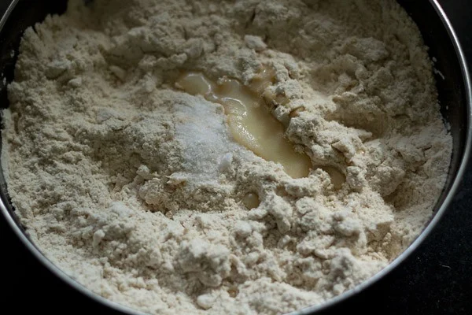
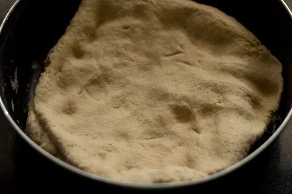
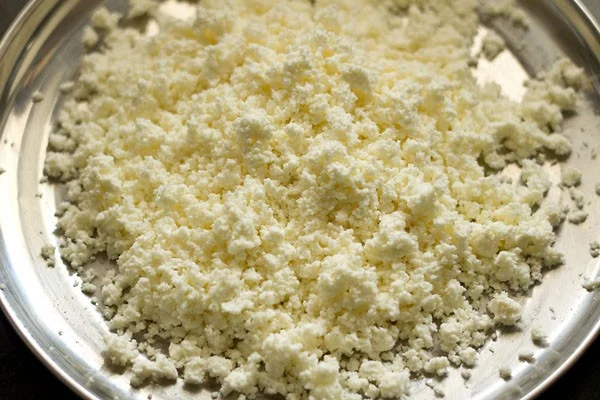
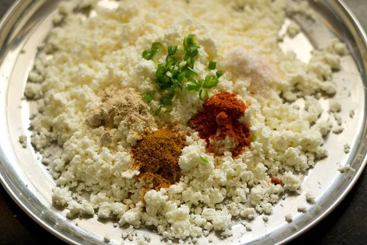
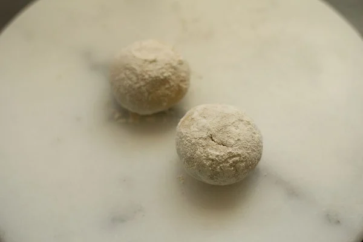
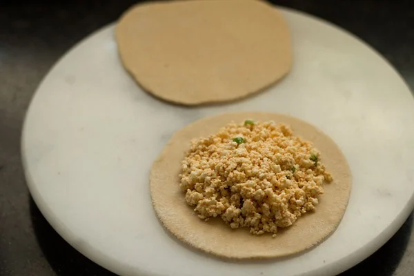
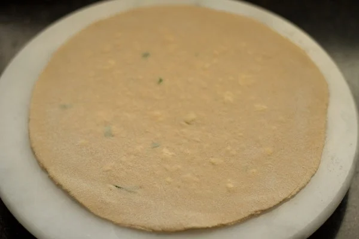
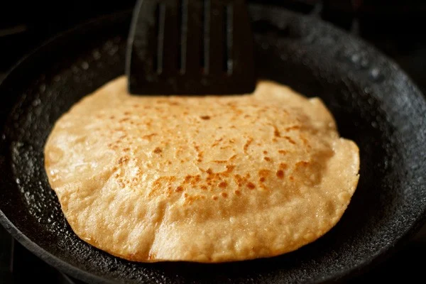

1. Take 2 to 2.25 cups whole wheat flour, ½ teaspoon salt, 1 teaspoon ghee or oil in a mixing bowl.
2. Pour about ½ cup water.
3. Mix and begin to knead. Add more water if required and knead to a smooth, soft and pliable dough. Overall, I added ⅔ cup water. I recommend not to add all the water at once. Add water bit by bit as you go on kneading the dough.

4. Cover the bowl with a lid and allow the dough to rest for 20 to 30 minutes.
5. Grate 200 grams paneer (Indian cottage cheese). If using frozen paneer, then follow the package instructions. For the best taste and texture, the paneer should be soft and fresh. Rancid paneer will make the paratha sour or bitter. Thus, better not to use it. I recommend to grate the paneer and not crumble with your hands. Grating ensures even size of the paneer. When crumbled with hands, you may get some bigger pieces which may break the paratha while rolling.

6. Add the following herbs and spices: 1 or 2 finely chopped green chilies or about ½ to 1 teaspoon finely chopped green chillies ½ teaspoon dry mango powder ½ teaspoon garam masala powder ½ teaspoon red chilli powder ½ teaspoon salt or add as required Note: You can add more salt, red chili powder or dried mango powder, if you prefer. Ensure that the green chilies are finely chopped or they will come out while rolling.
7. Mix everything well with a spoon so that the spice powders are uniformly mixed with the grated paneer.
8. Pinch 2 small balls from the dough and roll them in your palms to make them even.
9. Dust some flour on the dough balls

10. With a rolling pin, roll the dough balls to a disc of about 4 to 5 inches in diameter.
11. Place the prepared paneer stuffing on one of the rolled discs, keeping 1-inch space around the circumference. Don’t under-fill or overfill with the stuffing. If you overfill the stuffing, then it can come out while rolling. On the other hand, if you under-fill the stuffing, you get less taste of the paneer and more of the dough.
12. Cover with the other rolled dough. Press and seal the edges to close the layers.
13. Sprinkle some flour and roll the stuffed paratha to a disc of about 6 to 7 inches in diameter.

14. Heat a tawa, griddle or a flat skillet and then place the rolled paratha on it. The tawa should be hot. Ensure to use medium-high to high heat. To check the heat, sprinkle a generous pinch of whole wheat flour on the tawa. If the whole wheat flour becomes brown in some seconds, the tawa is hot enough to roast the paratha. Remove this browned flour from the tawa by wiping it with a cotton kitchen towel, before you begin roasting the paratha.
15. Flip when one side is partly cooked, that is, about ¼ cooked (after about 1 minute or so). You will see some air pockets and light blisters on this side.
16. Apply ghee or oil on this side with a spoon.
17. When the second side is half cooked (takes about 1½ minute or so), then turn and flip using a spatula.

17. When the second side is half cooked (takes about 1½ minute or so), then turn and flip using a spatula.
19. Spread some ghee on the top.
20. Flip again and you will many brown spots and blisters on the paratha.
21. Press the edges of paratha with a spatula so that the edges are cooked. A well stuffed and rolled paratha will puff up slightly while cooking.
22. Flip once or twice until the paratha has brown spots and is evenly cooked.

23. If serving later, place the parathas in a roti basket or casserole.
24. Optionally, you can add some softened butter on top.
25. Spread the butter on the parathas with a spoon.

26. Wipe the excess whole wheat flour if any, with a cotton kitchen napkin. So that the browned whole wheat flour particles do not stick to the parathas. Make all parathas this way in batches.

27. Keep on stacking them in the roti basket or casserole. Spread some butter on each paratha while stacking them. If not stacking them, thenserve Paneer Paratha hot with Mango Pickle or Mint Coriander Chutney. They can also be packed in lunch box. Best to have them immediately, as soon as they are prepared. A cup of hot tea will also go very well with these parathas, during monsoons or winters.